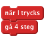
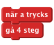
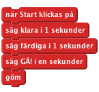
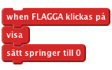
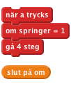
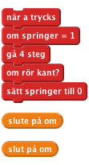
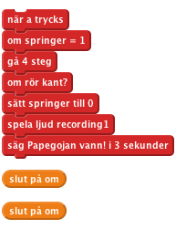
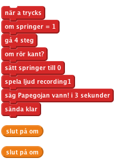
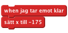
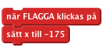

Nivå 2
Introduktion: Det här är ett spel för två personer där en papegoja och ett lejon har kapplöpning genom öknen. Varje spelare ska slå på en tangent så fort den kan för att flytta på sitt djur, och den första som når kanten på skärmen vinner.
Vi will att spritearna ska röra på sig när du trycker ner en tangent.


Klicka på den gröna flaggan Rör sig ditt lejon och din papegoja över skärmen när du trycker ner A och L?
Spara ditt projekt
Vi behöver ha ett sätt att påbörja racet och att veta vem som har vunnit. Först skapar vi en startknapp.

Klicka på den gröna flaggan.
När du trycken på startknappen, räknar den ner till starten och försvinner sen?
Spara ditt projekt
Vi will bara att de tävlande ska röra på sig efter att racet har startat och vi vill veta när racet är slut så vi behöver en variabel som kan hålla koll på den informationen.


Klicka på den gröna flaggan.
Flyttar sig lejonet och papegojan bara efter att nedräkningen är färdig?
Vi vill veta vem som vinner racet och återställa det när det är slut så att du kan tävla igen.


Klicka på den gröna flaggan.
Kan du trycka på startknappen och racea genom att trycka på A och L-tangenterna? Gör spritearna sina vinnarljud och säger att de har vunnit när de når mål (kanten på skärmen)?
Spara ditt projekt
När kapplöpningen är slut behöver vi berätta för de andra spritearna att vi har vunnit och nollställa spelet så att vi kan spela igen.
Vi behöver få vinnarspriten att sända ut att den har vunnit.



Klicka på den gröna flaggan.
Kan du tävla mot en kompis genom att en av er slår på A för att flytta papegojan och den andra flyttar lejonet genom att slå på L?
Spara ditt projekt
Spara ditt projekt
Bra jobbat, nu är du klar och kan spela ditt spel! Glöm inte att du kan dela spelet med dina kompisar och din familj genom att klicka på Dela ut i menyn!